凛冽雪山
本地离线版支持中英文站内搜索。带 ↗ 的链接需联网；中文采用用户词表，各页来源版本见页脚。

凛冽雪山是生物群系，冰冻积雪山峰间点缀冷杉。这片寒冷无情的区域是巨狼及其他芬瑞尔儿子们的家园。冰霜龙母的后代霜龙在空中飞翔，并在峰顶筑巢，产下龙蛋。小心移动的石堆，它们可能比看起来更有生命，那是沉睡的石魔被惊醒了。
山地也有冰霜洞穴，里面住着狂信徒及其宠物巨狼。邪蝠同样栖居此处，会惊吓毫无防备的维京人。墙上自然生长水晶，有时还有巨大的地下湖，要小心别惊醒可能沉睡其中的石魔。
进入山地会使玩家获得冻僵。饮用抗霜蜜酒，穿平原牦牛披风、狼毛披风、芬里之甲、轻羽斗篷或狼皮护甲 宝箱可消除；狼皮护甲双腿不提供冰霜抗性。附近营火也可消除此效果。
资源
- 银——银矿矿脉埋在山地积雪下，可用击败邪骨恶灵获得的愿望骨定位。开采至少需要铁镐。
- 黑曜石——黑曜石矿点生成在山地地表，可用于制作黑曜石箭，开采至少需要铁镐。
- 洋葱种子——位于箱子中，通常在废弃小屋内。
- 龙蛋——每个霜龙巢穴中央都有一枚。
- 箱子：（以下物品中的2-4种）
| 数额 | 物品 | 机会 |
|---|---|---|
| 1-6 | 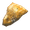 琥珀 |
14.3% |
| 2-5 | 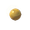 琥珀珍珠 |
14.3% |
| 16-41 | 14.3% | |
| 30-55 | 14.3% | |
| 5-10 | 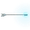 霜箭 |
14.3% |
| 1-2 | 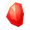 红宝石 |
14.3% |
| 5-10 | 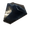 黑曜石 |
14.3% |
生物
敌对
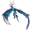
冰霜龙母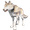
狼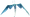
霜龙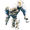
石魔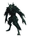
芬里 (夜间)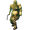
尸鬼 (凛冽雪山塔楼).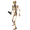
骷髅怪（山地塔楼或小屋；击败邪骨恶灵后，夜间可在各处出现）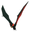
邪蝠 (内部) 冰霜洞穴)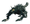
巨狼 (内部) 冰霜洞穴)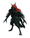
狂信徒 (内部) 冰霜洞穴)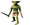
丑地精 (夜间,之后) 亚格鲁斯 被击败后）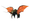
邪蛛探索者 (夜间,之后) 蛊虫之后 被击败后）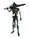
灰烬战士 (夜间,之后) 青焰龙王 被击败后）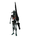
焦骨射手灰烬射手（击败青焰龙王后的夜间）
被动
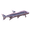
鲳鱼 (内部) 冰霜洞穴)
生态区域变体
除常规生物群系生成外，各片区域都有概率获得生态区域变体。同一片山地不能同时有多项修正。
| 名称 | 变动 | 每个世界的数量 | 距中心的最小距离 | 不包括 |
|---|---|---|---|---|
| 狼 凛冽雪山 | 有星生物生成概率x2 增加常见的 狼 生成 阻止 骷髅怪 与 霜龙 生成 更多树木，较少岩石。 |
1-5 | 2000m | 霜龙 凛冽雪山,
堡垒凛冽雪山 |
| 霜龙 凛冽雪山 | 有星生物生成概率x2 增加常见的 霜龙 生成 阻止 骷髅怪 与 狼 生成 更多岩石，较少树木。 |
1-3 | 2000m | 狼 凛冽雪山,
堡垒凛冽雪山 |
| 堡垒凛冽雪山 | 增加常见的 骷髅怪 与 石魔 生成 增加废弃的 石制结构 与 石头, 少树 添加 凛冽雪山塔楼 |
1-2 | 2000m | 狼 凛冽雪山,
霜龙 凛冽雪山 |
说明
- 石堆可在山峰上找到。
- 冷杉是唯一能在山地环境生长的树。
- 若其他生物群系正在下雨，进入山地后雨效会短暂残留。山地通常降下强度不一的雪，这些天气表现本身不影响玩法。
- 强烈暴风雪可能导致帧率下降。
- 某些地区的山地延伸至海平面，形成独特生态，只有巨狼和芬里游荡。地貌分为茂密冷杉林、高耸岩体和纯白海岸，暴风雪及冻僵气温使行进危险。
图片库


| 生物群系 | |||||||||||||||||||
|---|---|---|---|---|---|---|---|---|---|---|---|---|---|---|---|---|---|---|---|
| 重要 地点 |
| ||||||||||||||||||
| 资源 采集点 |
| ||||||||||||||||||
The Mountain is a biome which features frozen snow covered peaks framed with Fir trees. This frozen and unforgiving region is home to Wolves and others sons of Fenrir. Drakes, the offspring of Moder, can be found in the skies making their nests at its peaks where they lay their Dragon Eggs. Beware shifting piles of stone, they might be more alive than you think, stirring the resting Stone Golem.
Mountains can also contain Frost Caves, which are a dungeon home to Cultists and their pet Ulv. Bats also make their home here and can startle unsuspecting Vikings. Crystals can be found growing naturally on the walls and occasionally contain a large underground lake, be careful not to wake the Stone Golem that can also be resting there.
Going into the mountain biome will cause the Freezing effect on the player. This effect can be negated by drinking Frost Resistance Mead, wearing a Lox Cape, a Wolf Fur Cape, a Fenris Coat, a Feather Cape, or wearing the Wolf armor chest. The Wolf armor legs do not offer frost resistance. This effect is also negated by nearby campfires.
Resources
- Silver - Veins of Silver Ore can be located buried beneath the snow of the mountains. These veins can be located using a Wishbone, which is acquired by defeating Bonemass. Silver veins require an Iron Pickaxe or better to mine.
- Obsidian - Obsidian nodes spawn in above ground on the mountain, which can be used to make Obsidian Arrows. They require an Iron Pickaxe or better to mine.
- Onion Seeds - Located in chests, usually in abandoned shacks.
- Dragon Egg - One lies in the center of every Drake Nest.
- Chests: (2-4 of the following)
| Amount | Item | Chance |
|---|---|---|
| 1-6 | Amber | 14.3% |
| 2-5 | Amber pearl | 14.3% |
| 16-41 | 14.3% | |
| 30-55 | 14.3% | |
| 5-10 | Frost arrow | 14.3% |
| 1-2 | Ruby | 14.3% |
| 5-10 | Obsidian | 14.3% |
Creatures
Hostile
- Moder
- Wolf
- Drakes
- Stone Golems
- Fenrings (At nighttime)
- Draugr (Mountain towers)
- Skeletons (Mountain towers / Cabins; anywhere at night after Bonemass is defeated)
- Bat (Inside Frost Caves)
- Ulv (Inside Frost Caves)
- Cultist (Inside Frost Caves)
- Fulings (At nighttime, after Yagluth is defeated)
- Seekers (At nighttime, after The Queen is defeated)
- Charred Warriors (At nighttime, after Fader is defeated)
- Charred Marksmen Charred Marksman (At nighttime, after Fader is defeated)
Passive
- Tetra (Inside Frost Caves)
Alternative biomes
In addition to the regular Biomes generation, each local patch of biome has a chance to get an Alternative biomes. Mountains cannot have multiple modifiers in the same patch.
| Name | Changes | Number per world | Min Distance center | Exclude |
|---|---|---|---|---|
| Wolf Mountain | x2 chance for starred creatures Add common Wolf spawn Prevent Skeleton and Drake spawn More trees and less rock. |
1-5 | 2000m | Drake Mountain,
Fortress Mountain |
| Drake Mountain | x2 chance for starred creatures Add common Drake spawn Prevent Skeleton and Wolf spawn More rock, less tree. |
1-3 | 2000m | Wolf Mountain,
Fortress Mountain |
| Fortress Mountain | Add common Skeleton and Stone Golem spawn Add ruined Stone Structures and rock, less tree Add Mountain Towers |
1-2 | 2000m | Wolf Mountain,
Drake Mountain |
Notes
- Cairns can be found on the peaks of the mountains.
- The only type of tree that can grow in the Mountain environment is Fir.
- If it is raining in another biome, traveling into the Mountains will result in a lingering rain effect for a short period of time. Precipitation in the mountains usually takes the form of snow of varying intensity. These weather effects have no effect on gameplay.
- High intensity blizzards may cause frame drops.
- In certain regions, the mountain biome descends right to sea level, creating a unique ecosystem prowled only by Wolves and Fenrings. The landscape fractures into lush Fir woods, towering rock formations, and stark white shores, where blizzards and Freezing temperatures make navigation treacherous.
Gallery
| Biomes | Meadows • Black Forest • Ocean • Swamp • Mountain • Plains • Mistlands • Ashlands • Deep North • World Edge | ||||||||||||||||||
|---|---|---|---|---|---|---|---|---|---|---|---|---|---|---|---|---|---|---|---|
| Points of interest |
| ||||||||||||||||||
| Resource nodes |
| ||||||||||||||||||